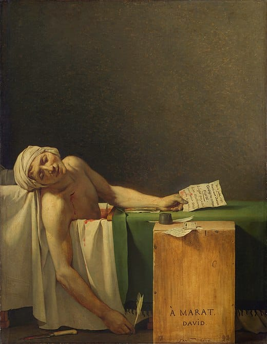
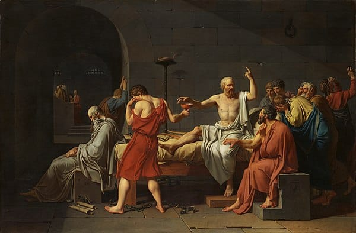
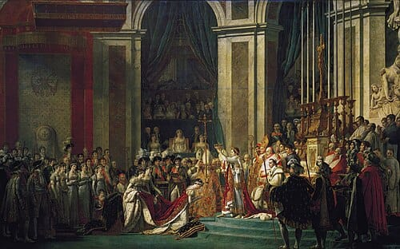
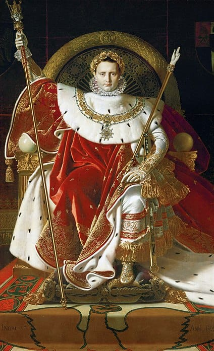

Periodo Storico
Il Neoclassicismo è una tendenza artistica e letteraria a cavallo tra il '700 e l'800. Nata come reazione al tardo barocco e al rococò e ispiratasi all'arte antica, in particolar modo quella greco-romana, fu variamente caratterizzata, ma ben riconoscibile nelle varie arti, nella letteratura, in campo teatrale, musicale e nell'architettura.
La morte di Marat
La morte di Marat, anche noto come Marat assassinato (La Mort de Marat), è un dipinto a olio su tela (165×128 cm) di Jacques-Louis David, realizzato nel 1793 e conservato nel museo reale delle belle arti del Belgio di Bruxelles.
~
La morte di Socrate
La Morte di Socrate (La Mort de Socrate) è un dipinto a olio su tela (129,5 × 196,2 cm) del pittore francese Jacques-Louis David, realizzato nel 1787 e conservato al Metropolitan Museum of Art di New York.
~
L'incoronazione di Napoleone
L'incoronazione di Napoleone (Le Sacre de Napoléon) è un dipinto a olio su tela (610x970 cm) realizzato tra il 1805 e il 1807 dal pittore Jacques-Louis David. È conservato nel museo del Louvre di Parigi. Una copia è conservata anche alla Reggia di Versailles, un'altra copia è conservata nella Oldway Mansion di Paignton nel Devon. Il dipinto rappresenta l'incoronazione di Napoleone Bonaparte e di Giuseppina di Beauharnais il 2 dicembre 1804.
~
Napoleone I sul trono Imperiale
Napoleone I sul trono imperiale (noto anche come Sua maestà l'imperatore dei francesi sul suo trono) è un dipinto (260×163 cm, olio su tela) del pittore francese Jean-Auguste-Dominique Ingres realizzato nel 1806. È esposto al Musée de l'Armée di Parigi
~